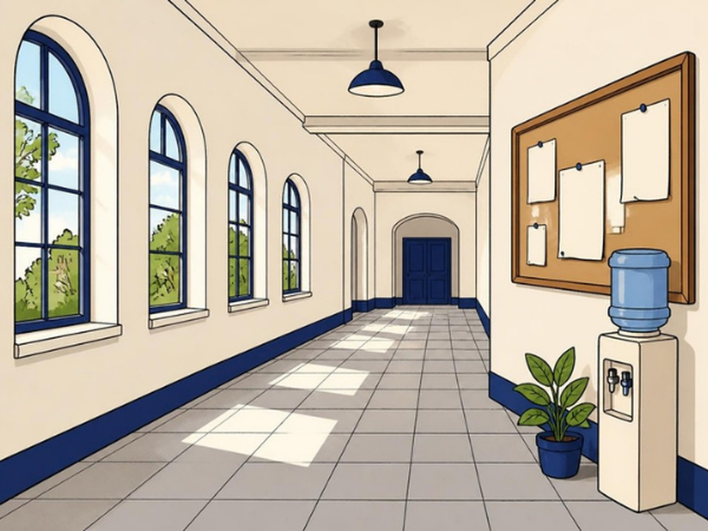

CLASS 11 · MATHEMATICS · CH 12 LIMITS AND DERIVATIVES
PROOF BOARD
What Is a
Limit
?
Explained with one walk to the wall
THE WALL GAME · HALF EACH MOVE
MOVE
0
GAP TO THE WALL
8 m
The gap tends to 0, but never lands on 0
DIYA · THE COLLEGE CORRIDOR

Does she ever touch the wall?
THE LIMIT · HOW WE WRITE IT
x CREEPS TOWARDS a
x
=
1.5
x gets as close as we like, but never has to equal a
For Diya: the gap tends to 0
LIVE · CREEP UP ON x = 2
h(x) NEAR 2 · BOTH SIDES
h(2) = 0/0: no value
Both sides close in on 4
WHY 4 · IN SMALL STEPS
A LINE WITH ONE HOLE
VALUE AT 2 · EXACTLY AT THE POINT
No value: there is a hole
LIMIT AT 2 · NEAR THE POINT
A limit looks near a, never at a
TWO SIDES · NCERT
TEST · [x] AT x = 1
0 ≠ 1: no limit at 1
THE GRAPH OF f NEAR 2
Limit 4 · value 7
CAN YOU ANSWER THESE WITHOUT HELP?
Remember this.
Near the point, from
both
sides.